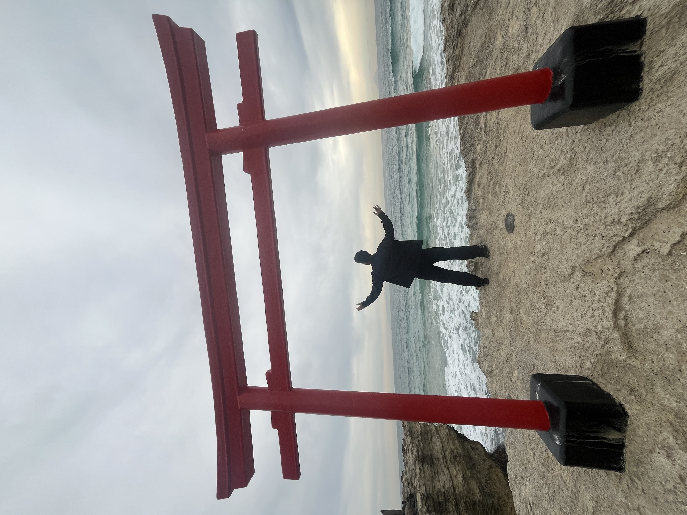

My Photos
-

Nagano Forest Camp
Tucked away in the cedar forests of Nagano this camping spot offered the perfect escape from the city — just tall trees, fresh mountain air, and good company. We set up camp stoves and folding chairs right on the forest floor, cooking a simple meal together while sunlight filtered through the canopy above. There’s something special about sharing food outdoors with friends, surrounded by nothing but nature and the quiet sounds of the forest.

Shirahama Beach
Shirahama Beach in Wakayama is famous for its brilliant white sand and clear turquoise water, often compared to a tropical getaway despite being right here in Japan. The roughly 640-meter stretch of white sand sits at the heart of the Nanki-Shirahama onsen area, so you can spend the day on the beach and soak in a hot spring afterward. It’s especially known as a beautiful spot to watch the sunset, when the sea and sky take on a dreamy, glowing atmosphere at dusk — the perfect backdrop for a quiet evening by the water.